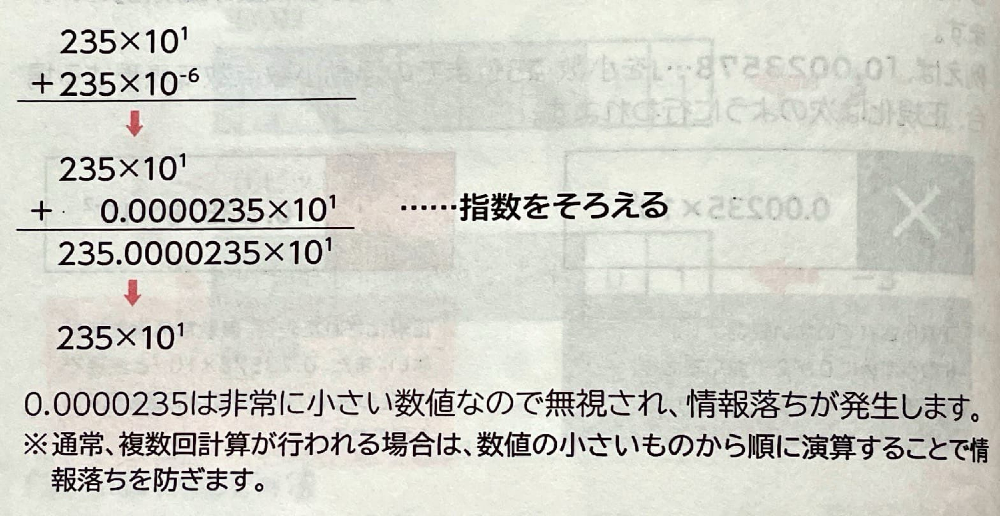
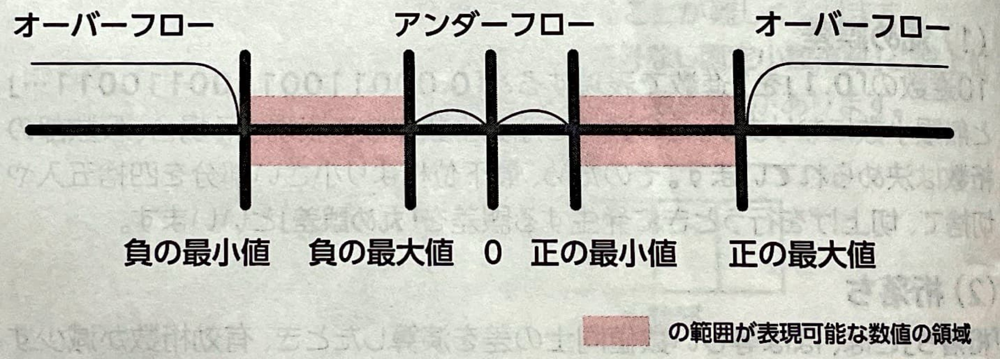

表示
｢誤差｣
が発生します。誤差とは、実際の数値とコンピュータ内部で表現する数値のことです。｢0.1｣
を2進数で表現すると｢0.00011001100110011…｣と無限小数になります。この数値を浮動小数点数で表現する場合、仮数部の桁数は決められています。そのため、最下位桁より小さい部分を四捨五入や切捨て、切上げを行うときに発生する誤差を｢丸め誤差｣
といいます。｢桁落ち｣
とは、ほぼ等しい数値同士の差を演算したとき、有効桁数が減少することで発生する誤差のことです。｢情報落ち｣
とは、絶対値の非常に大きい数値と非常に小さい数値を演算したとき、小さい数値が無視されてしまうことで発生する誤差のことです。
(4)オーバーフロー・アンダーフロー｢オーバフロー｣
とは、演算結果が数値で表現できる最大値を超えてしまうことで発生する誤差のことです。｢あふれ｣
ともいいます。｢アンダーフロー｣
とは、演算結果が数値で表現できる最小値を超えてしまうことで発生する誤差のことです。